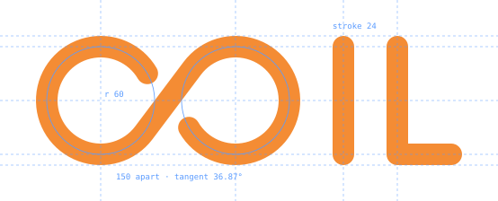
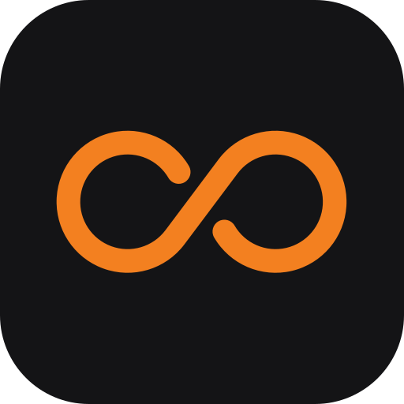
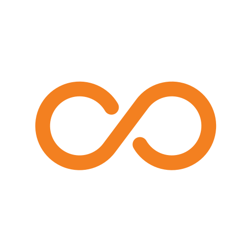
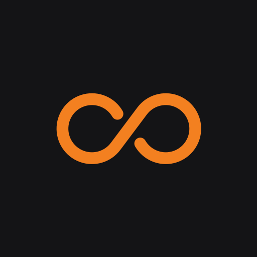
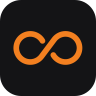

Logo, icons, colour and type. Generated by docs/brand/build.py.
Wordmark
The C and O are one line. The I and L use the same stroke. All three lines have the same weight and round ends.
coil-wordmark.svg
coil-wordmark.svg
coil-lockup-dark.svg
coil-lockup-light.svg
coil-wordmark-mono.svg
coil-wordmark-mono.svg
Construction
Two circles of radius 60, 150 apart, joined by a tangent at 36.87°. The stroke is 24. Every letter fits between the same two lines.

Clear space and minimum size
Keep empty space around the logo equal to half the mark's height. Don't use the wordmark below 72px wide. Below 24px, use the favicon.
16011072 min16
App icons
The dark tile is the default. The maskable icon keeps the mark inside the middle 80%, so circle, squircle and rounded-square masks never cut it.

icon-512.png

coil-icon-light.svg
apple-touch-icon.png

maskable-512.png
circlesquirclerounded

4832
coil
tab, dark
coil
tab, lightfavicon-16 at 4×
Colour
Orange on the dark tile. The other colours below are the app's tokens, copied from src/ui/style.ts.
Orange#F38020
Tile#141416
Paper#FFFFFF
Dark
bg#141416
side#18181b
raise#1f1f23
hover#26262b
line#26262b
line2#34343a
text#ececee
dim#9b9ba3
faint#62626a
orange#f6913e
orange-soft#3a2614
blue#5b9cff
blue-soft#15233b
ok#4cc38a
warn#e5a83b
bad#ff6b5b
Light
bg#ffffff
side#fafaf9
raise#f4f4f2
hover#efefec
line#ebebe8
line2#deded9
text#18181b
dim#6b6b70
faint#a1a1a6
orange#f38020
orange-soft#fdf0e4
blue#0051c3
blue-soft#eaf1fc
ok#1a7f4b
warn#b25e00
bad#c42b1c
Type
Google Sans Flex for the UI and Google Sans Code for code. Body text is 14px. Weights are 400, 500 and 600, and never bold. Headings use sentence case.
heading 600 / 20
Every thread gets its own computer
subhead 600 / 16
Pause, compact and fork
body 400 / 14
The disk is saved and the computer is turned off. The next message, command or file read resumes it.
emphasis 500 / 14
You cannot pause while the agent is working. Pause returns 409 until the turn ends.
inline code .9em
Start a server on localhost:3000 and open it in the browser.
mono 400 / 13
-bash-5.3# git log --oneline -1
Patterns
Background textures for large empty areas, such as the sign-in page, empty threads and slides. They are drawn at about 5% opacity, so you should only just see them. Do not put them behind text that people need to read.
loops-dark.svg
loops-light.svg
tangent-dark.svg
tangent-light.svg
dots-dark.svg
dots-light.svg
truchet-dark.svg
truchet-light.svg
Every agent thread gets a computer you share with it.
in use: empty state
Interface
The app is a workbench in three columns: threads on the left, the conversation in the middle, and the computer on the right. The layout comes from Amp's thread view. The words, states and colours are coil's own.
Counter page on localhost:3000Running
Build a counter page with a + button, serve it on localhost:3000, and commit it.
write_file app/index.html+41
busybox httpd -p 3000ok
git commit -m "Add counter page"a1c9e02
The page is live on localhost:3000 and committed. Open the browser tab on the right to try it.
Ran for 3m 13s · 4 tools
This computer pauses in 10 minutes
Nothing has happened for 20 minutes. Pausing saves the disk and turns the computer off. The next message resumes it.
Click + three more times and tell me the number.
Message the agent, or type / for commands
claude-sonnet-4.5
38% of context 76k of 200k tokens
In
12.4k
Out
3.1k
Cache read
60.5k
Compact when the ring turns orange. Usage and cost are in Settings.
Counter page on localhost:3000Running
Build a counter page with a + button, serve it on localhost:3000, and commit it.
write_file app/index.html+41
busybox httpd -p 3000ok
git commit -m "Add counter page"a1c9e02
The page is live on localhost:3000 and committed. Open the browser tab on the right to try it.
Ran for 3m 13s · 4 tools
This computer pauses in 10 minutes
Nothing has happened for 20 minutes. Pausing saves the disk and turns the computer off. The next message resumes it.
Click + three more times and tell me the number.
Message the agent, or type / for commands
claude-sonnet-4.5
Components
One set of parts, used everywhere. Black is for the main action and orange is only for the brand. State is shown with a dot and one word.
Context ring
0%10%30%50%65%75%85%95%
Gray when empty, green while there is room, then amber, orange and red as it fills. No numbers until you hover. No cost here.
Turn footer
Ran for 3m 13s · 4 tools
Ran for 41s · 1 tool
After every agent turn: how long it ran and how many tools it used.
Tooltips
Every icon button on desktop has one. Say what happens, and add the shortcut if there is one.
Buttons
Thread state
WorkingRunningPaused
litebasic
Panel tabs
shellshell 2browser
FilesHistory
Notice
The computer did not start
The container hit its memory limit. Try a bigger size, or send the message again.
Tool rows
npm testok
browser_click "+"ok
read_file package.json
Interface rules
These follow the Kumo design rules, adjusted for coil.
Three columns. Threads, conversation, computer. On phones, show one column at a time.
Bars are 44px. All three top bars line up, with one 1px line under them.
Body text is 14px. Bars, tabs and meta text are 13px. Code is 0.9em.
Weights are 400, 500 and 600. Never bold.
Primary button is black (white in dark). Orange is only for the logo, the busy dot, the shell prompt and Deploy.
A dot and a word show state. Orange means working, green means running and a hollow dot means paused.
Lines, not shadows. Use 1px lines and inset rings. Never put a border and a drop shadow together.
Corner radius goes 6, 7, 10, 12 and 14, from chips to buttons, rows, cards and the composer.
Hover changes instantly. Don't animate colour.
Context is a ring, not a number. One small ring by the model name. Hover for tokens. Cost lives only in Settings.
Every turn ends with a footer. "Ran for 3m 13s · 4 tools", in faint mono between two lines.
Every icon button has a tooltip on desktop. Say the action, then the shortcut.
Use plain words. "Pause" saves the disk and turns the computer off. Say exactly what will happen.
Your messages are blue bubbles on the right. The agent's replies are plain text with no bubble.
Tool calls are one row each. Show an icon, the name in mono and the result on the right.
Do not
Don't change the logo in any of these ways. Never put the mark next to "coil" typed in a font. That is the old logo that production still uses. The wordmark already spells the name.
✕stretch
✕rotate
✕coiltype it out
✕low contrast
✕coilmark + typed name
Files
Source files are in docs/brand/. The app loads its icons from public/icons/. To rebuild both, run node scripts/build-brand.mjs.